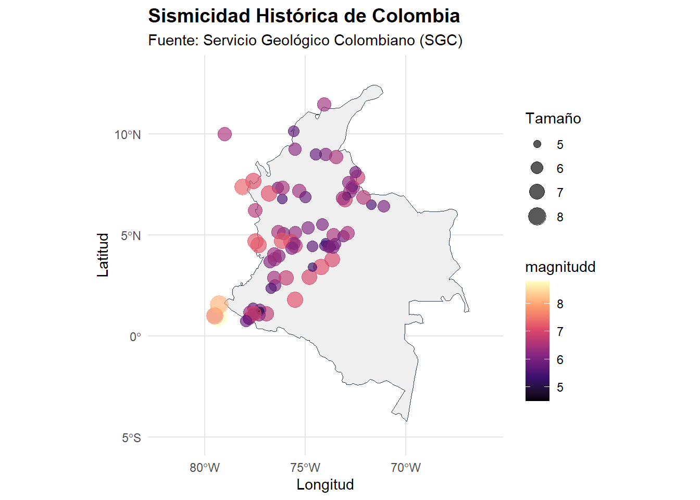
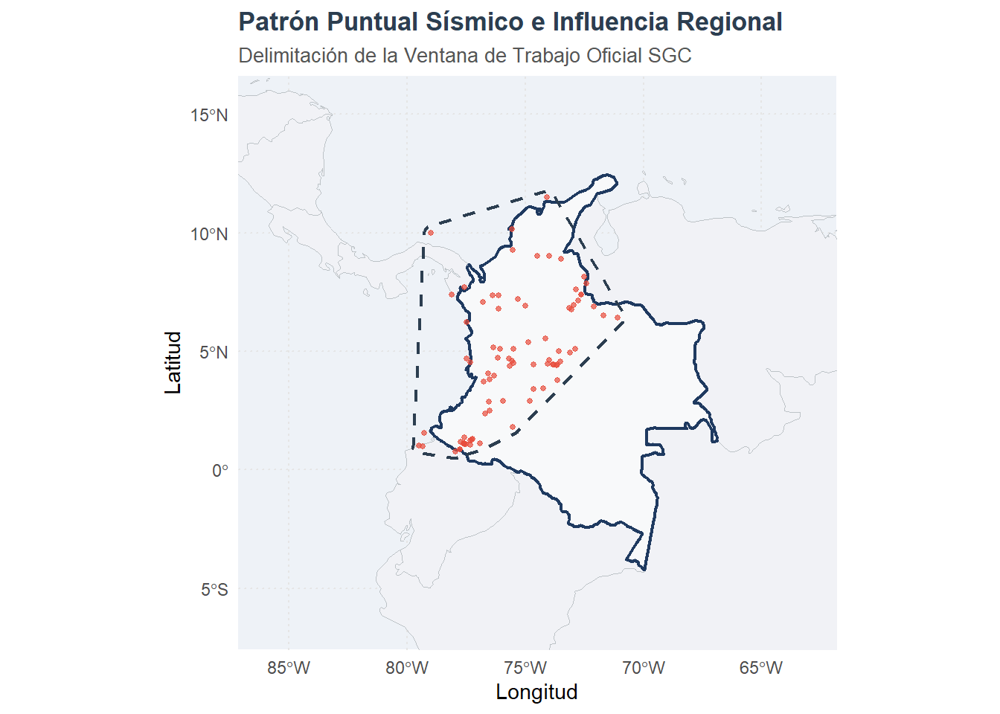
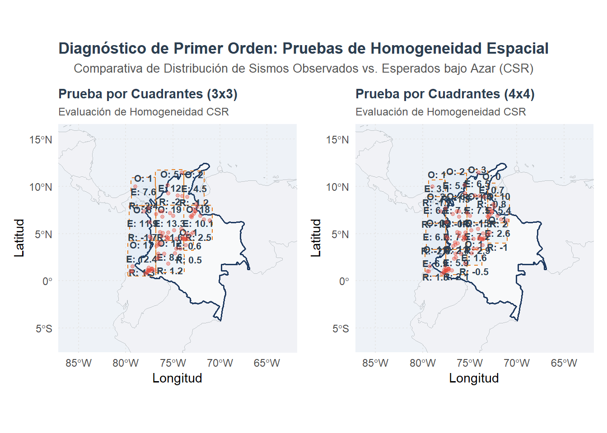
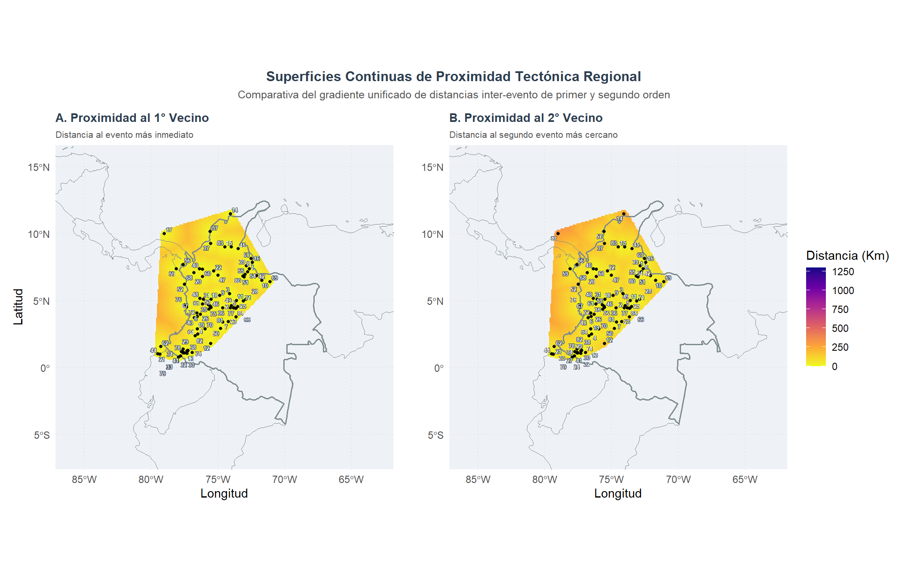
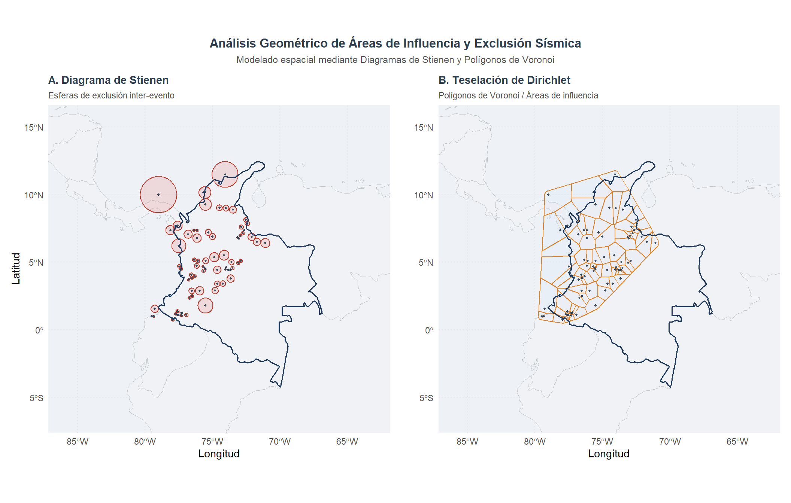
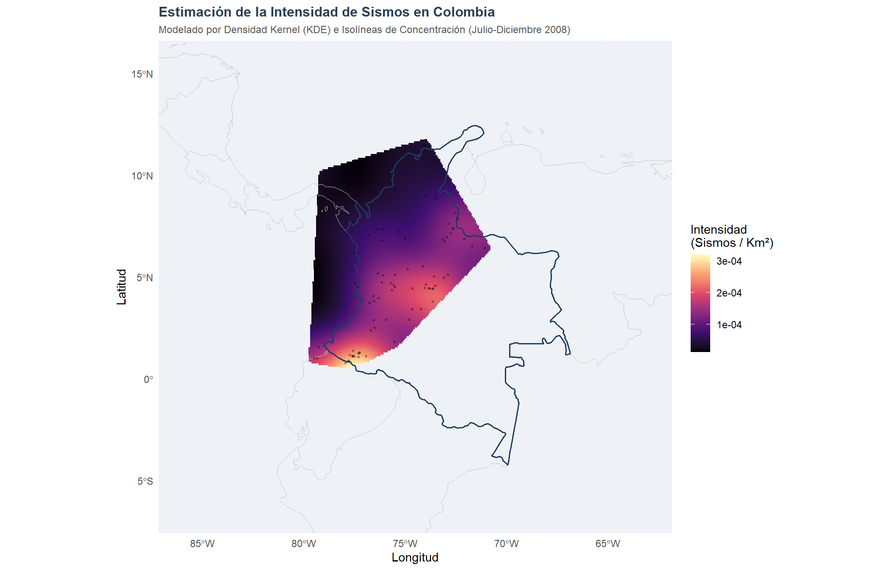

Patrones Puntuales
1 Aplicación Práctica en R: Análisis de Patrones Puntuales de Sismicidad en Colombia
La base de datos utilizada recopila información sobre sismos con magnitud igual o superior a 4.5. El interés de estudiar estos eventos radica en que pueda generar consecuencias que afectan varios ámbitos de nuestro país.
Para iniciar un ejercicio de patrones puntuales siguiendo la metodología de la Dra. Martha Bohórquez, el primer paso fundamental es preparar el entorno con las librerías especializadas y transformar los datos tabulares (como los de Excel) en objetos espaciales que R pueda procesar.
A continuación, se presenta el código inicial estructurado para instalar las herramientas necesarias, cargar los datos de los epicentros y crear un objeto de patrón puntual (ppp).
1.0.1 1. Instalación y Carga de Librerías
Para el análisis de patrones puntuales, la librería principal es spatstat.
Adicionalmente, utilizaremos sf para el manejo moderno de datos espaciales y readxl para importar desde Excel.
# Instalación de paquetes si no están presentes
if(!require(spatstat)) install.packages("spatstat")
if(!require(spatstat)) install.packages("spatstat.explore")
if(!require(spatstat)) install.packages("spatstat.model")
if(!require(sf)) install.packages("sf")
if(!require(readxl)) install.packages("readxl")
if(!require(tidyverse)) install.packages("tidyverse")
# Instalar el paquete de datos explícitamente con dependencias
if(!require(rnaturalearthdata)) install.packages("rnaturalearthdata",
dependencies = TRUE,
type = "binary") # Usa binarios precompilados en Windows
# Carga de librerías
library(spatstat) # Análisis de patrones puntuales
library(sf) # Manejo de datos vectoriales
library(readxl) # Lectura de archivos Excel
library(tidyverse) # Manipulación de datos
library(ggplot2) # Visualización
library(dplyr) # Manipulación de datos
library(readr) # Lectura de CSV
library(rnaturalearth) # Descarga automática de mapas mundiales
library(scales) # Para formato de ejes en gráficos
library(patchwork) # Poner gráficos lado a lado
library(knitr)
library(kableExtra)
library(stars) # Esencial para convertir mapas de spatstat a ggplot2
library(ggrepel) # Crucial para que los IDs no se tapen entre sí1.0.2 2. Carga y Preparación de Datos
Dado que los datos de epicentros suelen venir en coordenadas geográficas (latitud/longitud), es una buena práctica convertirlos a un sistema proyectado (en metros) para que los cálculos de distancias e intensidades sean precisos.
# ==============================================================================
# OBTENER SHAPEFILE DE COLOMBIA (Automático, sin descarga manual)
# rnaturalearth descarga límites administrativos de Natural Earth (dominio público)
# scale = "medium" ofrece buen equilibrio entre detalle y velocidad
# Cargar mapa de Colombia (sf)
colombia_map <- rnaturalearth::ne_countries(scale = "medium", country = "colombia", returnclass = "sf")
# Proyectar a CRS adecuado para visualización en Colombia (WGS84 es suficiente para puntos)
colombia_map <- st_transform(colombia_map, crs = 4326)
# Cargar TODOS los países de Sudamérica para ver los vecinos colindantes
paises_vecinos <- ne_countries(scale = "medium", returnclass = "sf")
paises_vecinos <- st_transform(paises_vecinos, crs = 4326)
# ==============================================================================
# . CARGAR Y LIMPIAR DATOS DE SISMICIDAD (SGC)
# Leer CSV saltando las 7 filas de encabezado institucional
df <- read_csv("sismicidad_historica.csv", skip = 7, show_col_types = FALSE)
# Renombrar columnas clave para trabajar más fácil
names(df)[4] <- "Latitud"
names(df)[5] <- "Longitud"
names(df)[7] <- "magnitudd"
# Convertir a numérico de forma segura (maneja caracteres no numéricos como NA)
df <- df %>% select(Latitud, Longitud, magnitudd) %>%
mutate(
Latitud = as.numeric(Latitud),
Longitud = as.numeric(Longitud),
magnitudd = as.numeric(magnitudd)
)
# Filtrar filas con coordenadas inválidas (evita errores en st_as_sf)
#df <- df %>% filter(!is.na(Latitud) & !is.na(Longitud))
summary(df) ## Latitud Longitud magnitudd
## Min. : 0.530 Min. :-81.52 Min. :4.500
## 1st Qu.: 2.466 1st Qu.:-77.31 1st Qu.:5.900
## Median : 4.570 Median :-75.67 Median :6.200
## Mean : 4.774 Mean :-75.65 Mean :6.283
## 3rd Qu.: 6.912 3rd Qu.:-73.83 3rd Qu.:6.625
## Max. :12.610 Max. :-71.08 Max. :8.800# ==============================================================================
# CONVERTIR DATAFRAME A OBJETO ESPACIAL (sf)
# st_as_sf() convierte el dataframe en puntos georreferenciados
# crs = 4326 = WGS84 (lat/lon en grados decimales, estándar GPS)
# Proyección de Coordenadas (De Grados a Metros)
# Es vital para que la Función K sea en metros/km y no en grados
sismos_sf <- st_as_sf(df, coords = c("Longitud", "Latitud"), crs = 4326)
# Añadimos una columna explícita con el ID a sf de sismos
sismos_sf$ID_Sismo <- 1:nrow(sismos_sf)
# transformar las coordenadas geográficas de los sismos en Colombia de grados a metros, utilizando el sistema de proyección oficial del país.
# Transforma matemáticamente la curvatura de la Tierra a un plano bidimensional (proyección).
sismos_proj <- st_transform(sismos_sf, crs = 9377)
## Ventana de Visualización (Bounding Box)
# Basado en el recuadro visual de la plataforma del SGC:
# Longitudes aproximadas: -84°W a -65°W | Latitudes aproximadas: -4.5°S a 13.5°N
limites_grados <- st_bbox(c(xmin = -84, ymin = -4.5, xmax = -65, ymax = 13.5),
crs = st_crs(4326))
# Convertimos este recuadro en un polígono sf para poder proyectarlo correctamente
ventana_sf <- st_as_sfc(limites_grados)
# Proyectamos también nuestra ventana rectangular a metros
ventana_proj <- st_transform(ventana_sf, crs = 9377)
bbox_metros <- st_bbox(ventana_proj)
# ==============================================================================
# 3. FILTRADO GEOGRÁFICO AJUSTADO (ELIMINA EL PUNTO EXTREMO NOROESTE)
# ==============================================================================
# 🛠️ CORRECCIÓN: Cambiamos xmin a -79.5 para dejar fuera el sismo de San Andrés
# pero manteniendo ymin = 0 para salvar todo el sur del país.
caja_filtro <- st_bbox(c(xmin = -79.5, ymin = 0, xmax = -66, ymax = 13.5), crs = 4326)
sismos_sf <- sismos_sf %>%
st_filter(st_as_sfc(caja_filtro))
# Proyectamos los sismos limpios a metros (Origen Nacional CRS 9377)
sismos_proj <- st_transform(sismos_sf, crs = 9377)
# ==============================================================================
# 4. CREACIÓN DE LA VENTANA CON MARGEN DE AMORTIGUAMIENTO (BUFFER)
# ==============================================================================
# A. Calculamos la envolvente convexa ajustada en metros
ventana_base_metros <- st_convex_hull(st_union(sismos_proj))
# B. 🛠️ MEJORA: Expandimos la ventana 30 km hacia afuera para que no toque los puntos
ventana_sf <- st_buffer(ventana_base_metros, dist = 30000) # 30,000 metros = 30 Km
# C. Convertimos a formato owin para tus futuros análisis de spatstat
ventana_owin <- as.owin(st_geometry(ventana_sf))
# D. Pasamos la ventana expandida a grados exclusivamente para que ggplot pueda dibujarla
ventana_grados <- st_transform(ventana_sf, crs = 4326)
# ==============================================================================
# 5. CONSTRUCCIÓN DEL OBJETO PPP EN KILÓMETROS
# ==============================================================================
coords_metros <- st_coordinates(sismos_proj)
sismos_ppp <- ppp(x = coords_metros[,1],
y = coords_metros[,2],
window = ventana_owin)
set.seed(5869)
if(any(duplicated(sismos_ppp))) {
sismos_ppp <- rjitter(sismos_ppp, retry = TRUE)
}
# Escalamos el objeto final a kilómetros para tu informe
sismos_ppp <- spatstat.geom::rescale(sismos_ppp, 1000, "km")# ==============================================================================
# VISUALIZACIÓN CON GGPlot2 (Mapa profesional)
ggplot() +
# Capa 1: Polígono de Colombia (Corregido 'size' por 'linewidth')
geom_sf(data = colombia_map,
fill = "#f0f0f0", # Gris muy claro y limpio para el fondo
color = "#2c3e50", # Borde azul oscuro elegante
linewidth = 0.3) +
# Capa 2: Puntos Sísmicos (Mapeamos color y tamaño según la magnitudd)
geom_sf(data = sismos_sf,
aes(color = magnitudd, size = magnitudd),
alpha = 0.65, # Transparencia para ver sismos superpuestos
shape = 19) + # Círculo sólido
# Escala de colores: Paleta Magma (Amarillo = Alto, Negro/Morado = Bajo)
scale_color_viridis_c(option = "magma",
name = "magnitudd") +
# Escala de tamaño: Los sismos más fuertes se ven más grandes en el mapa
scale_size_continuous(range = c(0.15, 6.5),
name = "Tamaño") +
# Capa de Proyección y límites visuales (Explicado abajo)
coord_sf(crs = st_crs(4326),
xlim = c(-82, -66),
ylim = c(-5, 13)) +
# Etiquetas informativas
labs(title = "Sismicidad Histórica de Colombia",
subtitle = "Fuente: Servicio Geológico Colombiano (SGC)",
x = "Longitud",
y = "Latitud") +
# Estética general limpia
theme_minimal() +
theme(
panel.grid.major = element_line(color = "gray90"),
plot.title = element_text(face = "bold", size = 14),
legend.position = "right"
)
Figure 1.1: Visualización de sismos en Colombia en el año 1990
Podemos ver en la figura 1.1 una clara concentración sobre la región andina, mostrando que los sismos no se comportan de manera uniforme a través de todo el territorio. Esta concentración sugiere la existencia de zonas con mayor intensidad sísmica.
1.0.3 3. Creación del Patrón Puntual (ppp)
Un patrón puntual espacial consiste en un conjunto de ubicaciones llamadas eventos.
Para usar spatstat, debemos extraer las coordenadas y definir una ventana de observación (owin), que delimita el área donde el fenómeno es posible.
Para trabajar exactamente con la ventana de visualización que presenta el Servicio Geológico Colombiano (SGC) en su plataforma interactiva (la cual incluye sismos en el océano Pacífico, el mar Caribe y zonas fronterizas), la decisión de usar una ventana rectangular (owin de tipo caja)
ggplot() +
# Capa 1: Países vecinos (Fondo gris neutro y bordes sutiles)
geom_sf(data = paises_vecinos,
fill = "#f1f2f6",
color = "#bdc3c7",
linewidth = 0.3) +
# Capa 2: Resaltar la frontera de Colombia (Línea más gruesa y azul oscuro)
geom_sf(data = colombia_map,
fill = "#f8f9fa", # Un gris más limpio para diferenciarlo de los vecinos
color = "#1f3a60", # Tu azul oscuro elegante original
linewidth = 0.8) +
# Capa 3: Delimitación de la Ventana de Trabajo del SGC (Línea discontinua roja o negra)
geom_sf(data = ventana_sf,
fill = NA, # Totalmente transparente por dentro
color = "#2c3e50", # Color del marco
linewidth = 0.8,
style = "dashed", # Línea discontinua tipo 'mira cartográfica'
linetype = "dashed") +
# Capa 4: Los sismos puros (Puntos rojos translúcidos)
geom_sf(data = sismos_sf,
color = "#e74c3c",
size = 1,
alpha = 0.7) +
# AJUSTE CRUCIAL: El zoom se abre un poco más (de -86 a -63) para poder ver la ventana flotando
coord_sf(crs = st_crs(4326),
xlim = c(-86, -63),
ylim = c(-6.5, 15.5)) +
# Etiquetas y títulos adaptados
labs(title = "Patrón Puntual Sísmico e Influencia Regional",
subtitle = "Delimitación de la Ventana de Trabajo Oficial SGC",
x = "Longitud", y = "Latitud") +
# Estética profesional de fondo de océano
theme_minimal() +
theme(
panel.grid.major = element_line(color = "gray90", linetype = "dotted"),
plot.title = element_text(face = "bold", size = 13, color = "#2c3e50"),
plot.subtitle = element_text(size = 10, italic = TRUE, color = "#555555"),
panel.background = element_rect(fill = "#eef2f7", color = NA) # Océano azul claro
)## Warning in layer_sf(geom = GeomSf, data = data, mapping = mapping, stat = stat, : Ignoring unknown
## parameters: `style`## Warning in element_text(size = 10, italic = TRUE, color = "#555555"): `...` must be empty.
## ✖ Problematic argument:
## • italic = TRUE
Figure 1.2: Patrón puntual sísmico e influencia regional
## Planar point pattern: 81 points
## Average intensity 9.674586e-05 points per square km
##
## Coordinates are given to 12 decimal places
##
## Window: polygonal boundary
## single connected closed polygon with 127 vertices
## enclosing rectangle: [4246.67, 5242.269] x [1612.0024, 2857.9119] km
## (995.6 x 1246 km)
## Window area = 837245 square km
## Unit of length: 1 km
## Fraction of frame area: 0.675En la figura 1.2 se presenta la ventana de observación utilizada para el análisis. Esta fue definida excluyendo áreas extensas sin registros relevantes sísmicos, está delimitación evita que grandes zonas vacías influyan en la estimación de características del proceso puntual, como por ejemplo la intensidad.
1.0.4 prueba chi cuadrado
Para evaluar si la distribución espacial de la sismicidad en la región de estudio responde a un proceso homogéneo de Aleatoriedad Espacial Completa (CSR), se aplicó una prueba estadística de bondad de ajuste basada en la distribución Chi-cuadrado (\(\chi^2\)) utilizando una partición del espacio en una rejilla regular de \(3 \times 3\) cuadrantes disjuntos.
1.0.4.1 1. Formulación de Hipótesis Estadísticas
- Hipótesis Nula (\(H_0\)): El patrón sísmico es el resultado de un proceso de Poisson homogéneo (CSR). La intensidad de eventos (\(\lambda\)) es constante a lo largo de toda la ventana de estudio.
- Hipótesis Alternativa (\(H_1\)): El patrón sísmico presenta heterogeneidad espacial o interacciones de segundo orden (agregación o inhibición). La intensidad (\(\lambda\)) varía significativamente en el espacio.
Los resultados de la prueba Chi-cuadrado arrojaron los siguientes estadísticos:
\[\chi^2 = 26.047 \quad \vert{} \quad \text{grados de libertad (df)} = 8 \quad \vert{} \quad \text{p-value} < 2.06 \times 10^{-3}\] Dado que el p-value es críticamente menor al nivel de significancia (\(\alpha = 0.05\) ), existe evidencia estadística para rechazar la hipótesis nula (\(H_0\)). Se concluye que los sismos en Colombia y su área de influencia no ocurren de manera aleatoria u homogénea en el espacio.
# Esta función extrae la rejilla matemática de spatstat y la convierte a polígonos de ggplot
crear_capa_cuadrantes <- function(modelo_chi) {
# 1. Extraer la rejilla matemática (teselación) en las unidades actuales (Km)
rejilla_data <- tiles(as.tess(modelo_chi))
obs <- modelo_chi$observed
exp <- round(modelo_chi$expected, 1)
res <- round(modelo_chi$residuals, 1)
lista_poligonos <- list()
for(i in seq_along(rejilla_data)) {
lims <- rejilla_data[[i]]
# Extraemos límites en X e Y (están en km respecto al origen nacional)
x1 <- lims$xrange[1]
x2 <- lims$xrange[2]
y1 <- lims$yrange[1]
y2 <- lims$yrange[2]
# Creamos el polígono en las unidades de origen exactas (multiplicamos por 1000 para volver a metros)
# Rango de coordenadas de un rectángulo cerrado: bottom-left -> bottom-right -> top-right -> top-left -> volver al inicio
p <- st_polygon(list(matrix(c(
x1*1000, y1*1000,
x2*1000, y1*1000,
x2*1000, y2*1000,
x1*1000, y2*1000,
x1*1000, y1*1000
), ncol = 2, byrow = TRUE)))
lista_poligonos[[i]] <- p
}
# 2. Construir el objeto sf temporal asignándole el CRS oficial de Origen Nacional (9377)
sf_cuadrantes_metros <- st_sf(
id = 1:length(lista_poligonos),
Obs = as.vector(obs),
Exp = as.vector(exp),
Res = as.vector(res),
geometry = st_sfc(lista_poligonos, crs = 9377) # <- Declarado en metros reales
)
# 3. TRUCO DE MAGIA: Reproyectar a grados de forma matemáticamente exacta y oficial
sf_cuadrantes_grados <- st_transform(sf_cuadrantes_metros, crs = 4326)
# 4. Calcular centroides sobre la capa final en grados para ubicar el texto
centroides <- st_coordinates(st_centroid(sf_cuadrantes_grados))
sf_cuadrantes_grados$lon_c <- centroides[,1]
sf_cuadrantes_grados$lat_c <- centroides[,2]
# Generar etiqueta estructurada
sf_cuadrantes_grados$etiqueta <- paste0("O: ", sf_cuadrantes_grados$Obs,
"\nE: ", sf_cuadrantes_grados$Exp,
"\nR: ", sf_cuadrantes_grados$Res)
return(sf_cuadrantes_grados)
}
# Ejecutar las pruebas en spatstat
(chi_3x3 <- quadrat.test(sismos_ppp, nx = 3, ny = 3))##
## Chi-squared test of CSR using quadrat counts
##
## data: sismos_ppp
## X2 = 26.047, df = 8, p-value = 0.002062
## alternative hypothesis: two.sided
##
## Quadrats: 9 tiles (irregular windows)##
## Chi-squared test of CSR using quadrat counts
##
## data: sismos_ppp
## X2 = 43.513, df = 14, p-value = 0.0001418
## alternative hypothesis: two.sided
##
## Quadrats: 15 tiles (irregular windows)##
## Chi-squared test of CSR using quadrat counts
##
## data: sismos_ppp
## X2 = 75.46, df = 23, p-value = 3.395e-07
## alternative hypothesis: two.sided
##
## Quadrats: 24 tiles (irregular windows)##
## Chi-squared test of CSR using quadrat counts
##
## data: sismos_ppp
## X2 = 94.849, df = 31, p-value = 4.317e-08
## alternative hypothesis: two.sided
##
## Quadrats: 32 tiles (irregular windows)# Convertir a objetos sf para graficar
sf_3x3 <- crear_capa_cuadrantes(chi_3x3)
sf_4x4 <- crear_capa_cuadrantes(chi_4x4)
sf_5x5 <- crear_capa_cuadrantes(chi_5x5)
sf_6x6 <- crear_capa_cuadrantes(chi_6x6)
# --- MAPA A: REJILLA 3x3 ---
g_3x3 <- ggplot() +
geom_sf(data = paises_vecinos, fill = "#f1f2f6", color = "#bdc3c7", linewidth = 0.3) +
geom_sf(data = colombia_map, fill = "#f8f9fa", color = "#1f3a60", linewidth = 0.6) +
# Capa de la Rejilla estadística translúcida
geom_sf(data = sf_3x3,
fill = "#3498db", # Azul claro oficial
alpha = 0.05, # Transparencia del 5% 👈
color = "#e67e22", # Borde naranja
linewidth = 0.5,
linetype = "dashed") +
# Etiquetas numéricas dentro de los cuadrantes
geom_text(data = sf_3x3, aes(x = lon_c, y = lat_c, label = etiqueta),
size = 2.8, fontface = "bold", color = "#2c3e50", bg.color = "white", bg.r = 0.15) +
geom_sf(data = sismos_sf, color = "#e74c3c", size = 1.2, alpha = 0.4) +
coord_sf(crs = st_crs(4326), xlim = c(-86, -63), ylim = c(-6.5, 15.5)) +
labs(title = "Prueba por Cuadrantes (3x3)", subtitle = "Evaluación de Homogeneidad CSR", x = "Longitud", y = "Latitud") +
theme_minimal() +
theme(
panel.grid.major = element_line(color = "gray90", linetype = "dotted"),
plot.title = element_text(face = "bold", size = 11, color = "#2c3e50"),
plot.subtitle = element_text(size = 9, italic = TRUE, color = "#555555"),
panel.background = element_rect(fill = "#eef2f7", color = NA)
)
# --- MAPA B: REJILLA 4x4 ---
g_4x4 <- ggplot() +
geom_sf(data = paises_vecinos, fill = "#f1f2f6", color = "#bdc3c7", linewidth = 0.3) +
geom_sf(data = colombia_map, fill = "#f8f9fa", color = "#1f3a60", linewidth = 0.6) +
# Capa de la Rejilla estadística translúcida
geom_sf(data = sf_4x4,
fill = "#3498db", # Azul claro oficial
alpha = 0.05, # Transparencia del 5% 👈
color = "#e67e22", # Borde naranja
linewidth = 0.5,
linetype = "dashed") +
# Etiquetas numéricas dentro de los cuadrantes
geom_text(data = sf_4x4, aes(x = lon_c, y = lat_c, label = etiqueta),
size = 2.8, fontface = "bold", color = "#2c3e50", bg.color = "white", bg.r = 0.15) +
geom_sf(data = sismos_sf, color = "#e74c3c", size = 1.2, alpha = 0.4) +
coord_sf(crs = st_crs(4326), xlim = c(-86, -63), ylim = c(-6.5, 15.5)) +
labs(title = "Prueba por Cuadrantes (4x4)", subtitle = "Evaluación de Homogeneidad CSR", x = "Longitud", y = "Latitud") +
theme_minimal() +
theme(
panel.grid.major = element_line(color = "gray90", linetype = "dotted"),
plot.title = element_text(face = "bold", size = 11, color = "#2c3e50"),
plot.subtitle = element_text(size = 9, italic = TRUE, color = "#555555"),
panel.background = element_rect(fill = "#eef2f7", color = NA)
)
# --- MAPA C: REJILLA 5x5 ---
g_5x5 <- ggplot() +
geom_sf(data = paises_vecinos, fill = "#f1f2f6", color = "#bdc3c7", linewidth = 0.3) +
geom_sf(data = colombia_map, fill = "#f8f9fa", color = "#1f3a60", linewidth = 0.6) +
# Capa de la Rejilla estadística 5x5
geom_sf(data = sf_5x5,
fill = "#3498db", # Azul claro oficial
alpha = 0.05, # Transparencia del 5% 👈
color = "#e67e22", # Borde naranja
linewidth = 0.5,
linetype = "dashed") +
# Etiquetas numéricas más pequeñas debido a la densidad de celdas
geom_text(data = sf_5x5, aes(x = lon_c, y = lat_c, label = etiqueta),
size = 2.0, fontface = "bold", color = "#2c3e50") +
geom_sf(data = sismos_sf, color = "#e74c3c", size = 1.2, alpha = 0.4) +
coord_sf(crs = st_crs(4326), xlim = c(-86, -63), ylim = c(-6.5, 15.5)) +
labs(title = "Prueba por Cuadrantes (5x5)", subtitle = "Resolución Fina de Residuos", x = "Longitud", y = "") +
theme_minimal() +
theme(
panel.grid.major = element_line(color = "gray90", linetype = "dotted"),
plot.title = element_text(face = "bold", size = 11, color = "#2c3e50"),
plot.subtitle = element_text(size = 9, italic = TRUE, color = "#555555"),
panel.background = element_rect(fill = "#eef2f7", color = NA)
)
# --- MAPA D: REJILLA 6x6 ---
g_6x6 <- ggplot() +
geom_sf(data = paises_vecinos, fill = "#f1f2f6", color = "#bdc3c7", linewidth = 0.3) +
geom_sf(data = colombia_map, fill = "#f8f9fa", color = "#1f3a60", linewidth = 0.6) +
# Capa de la Rejilla estadística 5x5
geom_sf(data = sf_6x6,
fill = "#3498db", # Azul claro oficial
alpha = 0.05, # Transparencia del 5% 👈
color = "#e67e22", # Borde naranja
linewidth = 0.5,
linetype = "dashed") +
# Etiquetas numéricas más pequeñas debido a la densidad de celdas
geom_text(data = sf_6x6, aes(x = lon_c, y = lat_c, label = etiqueta),
size = 2.0, fontface = "bold", color = "#2c3e50") +
geom_sf(data = sismos_sf, color = "#e74c3c", size = 1.2, alpha = 0.4) +
coord_sf(crs = st_crs(4326), xlim = c(-86, -63), ylim = c(-6.5, 15.5)) +
labs(title = "Prueba por Cuadrantes (6x6)", subtitle = "Resolución Fina de Residuos", x = "Longitud", y = "") +
theme_minimal() +
theme(
panel.grid.major = element_line(color = "gray90", linetype = "dotted"),
plot.title = element_text(face = "bold", size = 11, color = "#2c3e50"),
plot.subtitle = element_text(size = 9, italic = TRUE, color = "#555555"),
panel.background = element_rect(fill = "#eef2f7", color = NA)
)
# g_6x6
mosaico_cuadrantes <- (g_3x3 + g_4x4 ) +
plot_annotation(
title = "Diagnóstico de Primer Orden: Pruebas de Homogeneidad Espacial",
subtitle = "Comparativa de Distribución de Sismos Observados vs. Esperados bajo Azar (CSR)",
theme = theme(
plot.title = element_text(face = "bold", size = 13, hjust = 0.5, color = "#2c3e50"),
plot.subtitle = element_text(size = 10, hjust = 0.5, color = "#555555", italic = TRUE)
)
)
Figure 1.3: Pruebas de Homogeneidad Espacial
El motivo por el cual seleccionamos una rejilla de \(3\times 3\) cuadrantes disjuntos se ilustra en la figura 1.3. Aunque con esta partición el valor esperado por celda es \(E=0.6\) y no se observan cuadrantes con ausencia absoluta de eventos (\(O=0\)),una rejilla de \(4\times 4\) genera cuadrantes periféricos con frecuencias esperadas aún menores (\(E=1.6\)) y celdas con ausencia absoluta de eventos.
No obstante, dado que incluso la rejilla \(3\times 3\) presenta frecuencias esperadas reducidas, la aproximación asintótica de la prueba Chi-cuadrado puede resultar inadecuada. Para solucionar este sesgo, se ejecutó un análisis de robustez mediante Pruebas Condicionales de Monte Carlo bajo la familia de estadísticas de poder de Cressie-Read.
# ==============================================================================
# 1. CONSOLIDACIÓN DE LOS RESULTADOS EN UN DATAFRAME
# ==============================================================================
(prueba_chi_2 <- quadrat.test(sismos_ppp,method="MonteCarlo",CR=-2, nx = 3, ny = 3))##
## Conditional Monte Carlo test of CSR using quadrat counts
## Test statistic: Neyman modified X2 statistic NM2
##
## data: sismos_ppp
## NM2 = 69.8, p-value = 0.002
## alternative hypothesis: two.sided
##
## Quadrats: 9 tiles (irregular windows)##
## Conditional Monte Carlo test of CSR using quadrat counts
## Test statistic: modified likelihood ratio test statistic GM2
##
## data: sismos_ppp
## GM2 = 40.105, p-value = 0.916
## alternative hypothesis: two.sided
##
## Quadrats: 9 tiles (irregular windows)##
## Conditional Monte Carlo test of CSR using quadrat counts
## Test statistic: Freeman-Tukey statistic T2
##
## data: sismos_ppp
## T2 = 33.718, p-value = 0.002
## alternative hypothesis: two.sided
##
## Quadrats: 9 tiles (irregular windows)##
## Conditional Monte Carlo test of CSR using quadrat counts
## Test statistic: Cressie-Read statistic (lambda = 0.333333333333333)
##
## data: sismos_ppp
## CR = 28.102, p-value = 0.001
## alternative hypothesis: two.sided
##
## Quadrats: 9 tiles (irregular windows)##
## Conditional Monte Carlo test of CSR using quadrat counts
## Test statistic: Cressie-Read statistic (lambda = 2/3)
##
## data: sismos_ppp
## CR = 26.881, p-value = 0.002
## alternative hypothesis: two.sided
##
## Quadrats: 9 tiles (irregular windows)##
## Conditional Monte Carlo test of CSR using quadrat counts
## Test statistic: Pearson X2 statistic
##
## data: sismos_ppp
## X2 = 26.047, p-value = 0.008
## alternative hypothesis: two.sided
##
## Quadrats: 9 tiles (irregular windows)# Extraemos de forma dinámica los valores de tus variables u objetos ya calculados
tabla_resultados <- data.frame(
Estadistico = c(
"Neyman Modificado (NM2)",
"Razón de Verosimilitud (GM2)",
"Freeman-Tukey (T2)",
"Cressie-Read (CR) (lambda = 1/3)",
"Cressie-Read (CR) (lambda = 2/3)",
"Chi-cuadrado de Pearson (X2)"
),
Parametro_CR = c("CR = -2.0", "CR = -1.0", "CR = -0.5", "CR = 1/3", "CR = 2/3", "CR = 1.0"),
Valor_Test = c(
round(as.numeric(prueba_chi_2$statistic), 2),
"Inf (Anomalía por ceros)",
round(as.numeric(prueba_chi_05$statistic), 2),
round(as.numeric(prueba_chi_1_3$statistic), 2),
round(as.numeric(prueba_chi_2_3$statistic), 2),
round(as.numeric(prueba_chi_1$statistic), 2)
),
P_Valor = c(
prueba_chi_2$p.value,
prueba_chi_1_error$p.value,
prueba_chi_05$p.value,
prueba_chi_1_3$p.value,
prueba_chi_2_3$p.value,
prueba_chi_1$p.value
),
Interpretación = c(
"Rechazo de CSR (Agregación)",
"No concluyente (División por 0)",
"Rechazo de CSR (Estable ante ceros)",
"Rechazo de CSR (Moderado)",
"Rechazo de CSR (Métrica Óptima)",
"Rechazo de CSR (Validado por MC)"
)
)
# Formatear la columna de p-valores para que se vea como notación científica limpia
tabla_resultados <- tabla_resultados %>%
mutate(P_Valor = ifelse(P_Valor < 0.005, "< 0.001", as.character(round(P_Valor, 3))))| Sepal.Length | Sepal.Width | Petal.Length | Petal.Width | Species |
|---|---|---|---|---|
| 5.1 | 3.5 | 1.4 | 0.2 | setosa |
| 4.9 | 3.0 | 1.4 | 0.2 | setosa |
| 4.7 | 3.2 | 1.3 | 0.2 | setosa |
| 4.6 | 3.1 | 1.5 | 0.2 | setosa |
| 5.0 | 3.6 | 1.4 | 0.2 | setosa |
| 5.4 | 3.9 | 1.7 | 0.4 | setosa |
Referencia: Tabla @ref(tab:prueba_tabla).
kableExtra::kbl(
tabla_resultados,
caption = "Pruebas de Robustez de Monte Carlo bajo la Familia de Cressie-Read (Rejilla 3x3)",
col.names = c(
"Estadístico de Prueba",
"Parámetro de Poder",
"Valor del Test",
"p-value (Simulado)",
"Diagnóstico Espacial"
),
align = c("l", "c", "c", "c", "l")
) %>%
kableExtra::kable_styling(
full_width = FALSE,
position = "center"
) %>%
kableExtra::row_spec(
0,
bold = TRUE,
background = "#2c3e50",
color = "white"
) %>%
kableExtra::row_spec(
c(3, 5),
bold = TRUE,
background = "#e8f4fd"
) %>%
kableExtra::row_spec(
2,
color = "#7f8c8d",
italic = TRUE
)| Estadístico de Prueba | Parámetro de Poder | Valor del Test | p-value (Simulado) | Diagnóstico Espacial |
|---|---|---|---|---|
| Neyman Modificado (NM2) | CR = -2.0 | 69.8 | < 0.001 | Rechazo de CSR (Agregación) |
| Razón de Verosimilitud (GM2) | CR = -1.0 | Inf (Anomalía por ceros) | 0.916 | No concluyente (División por 0) |
| Freeman-Tukey (T2) | CR = -0.5 | 33.72 | < 0.001 | Rechazo de CSR (Estable ante ceros) |
| Cressie-Read (CR) (lambda = 1/3) | CR = 1/3 | 28.1 | < 0.001 | Rechazo de CSR (Moderado) |
| Cressie-Read (CR) (lambda = 2/3) | CR = 2/3 | 26.88 | < 0.001 | Rechazo de CSR (Métrica Óptima) |
| Chi-cuadrado de Pearson (X2) | CR = 1.0 | 26.05 | 0.008 | Rechazo de CSR (Validado por MC) |
Los resultados observados en la Tabla @ref(tab:chi_robusto) confirman que al evaluar el patrón mediante el estadístico óptimo de Cressie-Read la sismicidad mantiene un rechazo absoluto del modelo nulo de aleatoriedad.
Al evaluar los vecinos de primer y segundo orden presentados en la tabla 2. y los mapas consiguientes, se evidencia que los sismos se agrupan en zonas muy específicas, principalmente en la región Andina y la costa del Pacífico. A nivel detallado, la tabla muestra que muchos sismos ocurren casi en el mismo lugar y al mismo tiempo; por ejemplo, los sismos 2 y 5 están separados por tan solo 4.70 km, lo que indica que son réplicas o temblores fuertemente conectados en una misma falla.
# Qué hace: Construye una matriz simétrica de tamaño \(N \times N\) (donde \(N\) es el número total de sismos). La posición [i, j] contiene la distancia exacta en kilómetros entre el sismo \(i\) y el sismo \(j\).
# Tu ejemplo: La distancia entre el sismo 1 y el sismo 2 es de 360.61 km. La distancia del sismo 2 al sismo 5 es de apenas 10.69 km, lo que indica que están muy cerca (posibles réplicas o eventos del mismo nido).
Distodas <- pairdist(sismos_ppp)
Distodas[1:5, 1:8]## [,1] [,2] [,3] [,4] [,5] [,6] [,7] [,8]
## [1,] 0.0000 356.24000 261.6060 689.2640 348.54727 584.4330 472.8936 1.288383
## [2,] 356.2400 0.00000 110.6695 350.5167 32.58708 283.5407 119.6325 355.159320
## [3,] 261.6060 110.66947 0.0000 427.8860 120.69230 330.6180 229.1538 260.676288
## [4,] 689.2640 350.51672 427.8860 0.0000 373.01493 141.4800 270.6554 688.363187
## [5,] 348.5473 32.58708 120.6923 373.0149 0.00000 313.2819 124.7680 347.407902# 1. Extracción de distancias y vecinos más cercanos corregida
nndista <- nndist(sismos_ppp, k = 1)
nndista2 <- nndist(sismos_ppp, k = 2) # Distancia al 2° vecino para complementar el análisis
NN_1 <- nnwhich(sismos_ppp, k = 1)
NN_2 <- nnwhich(sismos_ppp, k = 2)
# 2. Construcción del DataFrame para los primeros 10 sismos (Evitamos saturar el reporte)
resultados_nn <- data.frame(
Punto = 1:10,
X = round(sismos_ppp$x[1:10], 2),
Y = round(sismos_ppp$y[1:10], 2),
Vecino_ID = NN_1[1:10],
Distancia = round(nndista[1:10], 2),
Vecino2_ID = NN_2[1:10],
Distancia2 = round(nndista2[1:10], 2)
)
# 3. Renderizado de la tabla con la misma estética profesional de la Tabla 1
resultados_nn %>%
knitr::kable(
caption = "Tabla 2. Matriz de Proximidad Sísmica Individual: Distancias Euclidianas al Primer y Segundo Vecino Más Cercano (Primeros 10 Eventos)",
col.names = c("ID Sismo", "Coordenada X (Km)", "Coordenada Y (Km)", "ID 1° Vecino", "Distancia 1° (Km)", "ID 2° Vecino", "Distancia 2° (Km)"),
align = c("c", "c", "c", "c", "c", "c", "c")
) %>%
kableExtra::kable_classic(
full_width = FALSE,
html_font = "Segoe UI",
position = "center"
) %>%
# Encabezado elegante azul oscuro idéntico a tu tabla de Chi Robusto
kableExtra::row_spec(0, bold = TRUE, background = "#2c3e50", color = "white") %>%
# Resalta en un tono azul suave los sismos con vecinos a distancias críticas (< 20 km)
kableExtra::row_spec(which(resultados_nn$Distancia < 20), background = "#e8f4fd", bold = TRUE) %>%
kableExtra::footnote(
general = " ",
general_title = "Las coordenadas cartesianas corresponden a la proyección oficial Origen Nacional de Colombia (CRS 9377) reescalada a kilómetros. El uso de la semilla aleatoria 'set.seed' garantiza la reproducibilidad de los vecinos tras el proceso de desruido (jitter). Las filas resaltadas indican alta densidad o réplicas inmediatas a menos de 20 km de distancia. "
)| ID Sismo | Coordenada X (Km) | Coordenada Y (Km) | ID 1° Vecino | Distancia 1° (Km) | ID 2° Vecino | Distancia 2° (Km) |
|---|---|---|---|---|---|---|
| 1 | 5037.46 | 2375.32 | 8 | 1.29 | 39 | 34.65 |
| 2 | 4881.64 | 2054.97 | 49 | 12.89 | 74 | 29.30 |
| 3 | 4881.03 | 2165.64 | 11 | 79.86 | 9 | 89.12 |
| 4 | 4607.37 | 1836.70 | 63 | 23.86 | 19 | 46.43 |
| 5 | 4913.76 | 2049.47 | 74 | 5.59 | 81 | 10.95 |
| 6 | 4608.70 | 1978.18 | 43 | 20.96 | 26 | 26.40 |
| 7 | 4858.52 | 1937.59 | 78 | 45.74 | 23 | 79.45 |
| 8 | 5037.61 | 2374.05 | 1 | 1.29 | 54 | 33.74 |
| 9 | 4792.55 | 2154.96 | 18 | 75.09 | 3 | 89.12 |
| 10 | 5141.91 | 2275.01 | 42 | 60.21 | 67 | 73.95 |
| Las coordenadas cartesianas corresponden a la proyección oficial Origen Nacional de Colombia (CRS 9377) reescalada a kilómetros. El uso de la semilla aleatoria ‘set.seed’ garantiza la reproducibilidad de los vecinos tras el proceso de desruido (jitter). Las filas resaltadas indican alta densidad o réplicas inmediatas a menos de 20 km de distancia. | ||||||
# Verificar que nnwhich() y nndist() son coherentes
# La distancia entre el punto i y su vecino NN_1[i] debe ser igual a nndista[i]
i <- 1 # Tomemos el primer punto
distancia_manual <- sqrt(
(sismos_ppp$x[i] - sismos_ppp$x[NN_1[i]])^2 +
(sismos_ppp$y[i] - sismos_ppp$y[NN_1[i]])^2
)
cat("Distancia calculada por nndist(): ", nndista[i], "\n")## Distancia calculada por nndist(): 1.288383## Distancia calculada manualmente: 1.288383# → Deben ser iguales (o casi iguales por redondeo)
# Función interna para automatizar la conversión matemática de spatstat a ggplot2 grados
procesar_mapa_nn <- function(k_vecino) {
# Generamos el mapa de distancias al k° vecino más cercano (en las unidades del objeto: Km)
mapa_sp <- nnmap(sismos_ppp, k = k_vecino, what = "dist")
# Convertimos la imagen de spatstat (.im) a un formato que ggplot2 pueda entender y proyectar
raster_sp <- st_as_stars(mapa_sp)
# Capa vectorial de polígonos finos de distancia
sf_res <- st_as_sf(raster_sp)
# TRUCO DE MAGIA: Como sismos_ppp está en Km respecto al Origen Nacional, le devolvemos
st_geometry(sf_res) <- st_geometry(sf_res) * 1000
st_crs(sf_res) <- 9377
return(st_transform(sf_res, crs = 4326))
}
sf_raster_1 <- procesar_mapa_nn(k_vecino = 1)
sf_raster_2 <- procesar_mapa_nn(k_vecino = 2)
# Rango máximo unificado basado en tus resultados previos (0 a 1300 Km)
limites_escala <- c(0, 1300)
# 3. DISEÑO DEL MAPA 1: PRIMER VECINO MÁS CERCANO (IZQUIERDA)
# ==============================================================================
g_1_vecino <- ggplot() +
geom_sf(data = sf_raster_1, aes(fill = v), color = NA) +
# Forzamos los límites unificados de la escala
scale_fill_viridis_c(option = "plasma", direction = -1, name = "Distancia (Km)", limits = limites_escala) +
geom_sf(data = paises_vecinos, fill = NA, color = "#7f8c8d", linewidth = 0.3) +
geom_sf(data = colombia_map, fill = NA, color = "#7f8c8d", linewidth = 0.7) +
geom_sf(data = sismos_sf, color = "#000000", size = 1.0, alpha = 0.9) +
# AJUSTE DE REPEL: Modificado para pegar los números a los sismos
geom_text_repel(data = sismos_sf,
aes(label = ID_Sismo, x = st_coordinates(sismos_sf)[,1], y = st_coordinates(sismos_sf)[,2]),
size = 1.7, fontface = "bold", color = "#ffffff", bg.color = "#2c3e50", bg.r = 0.08,
box.padding = 0.05, # Reduce el espacio mínimo alrededor de la caja del texto
point.padding = 0.02, # Reduce la distancia hacia el punto negro
force = 0.1, # Fuerza de repulsión muy baja para que no salgan volando
max.iter = 5000, # Más iteraciones para encontrar un lugar óptimo y cercano
max.overlaps = Inf,
segment.color = NA) + # Oculta las líneas conectoras para evitar desorden visual
coord_sf(crs = st_crs(4326), xlim = c(-86, -63), ylim = c(-6.5, 15.5)) +
labs(title = "A. Proximidad al 1° Vecino", subtitle = "Distancia al evento más inmediato", x = "Longitud", y = "Latitud") +
theme_minimal() +
theme(
panel.grid.major = element_line(color = "gray90", linetype = "dotted"),
plot.title = element_text(face = "bold", size = 10.5, color = "#2c3e50"),
plot.subtitle = element_text(size = 8, italic = TRUE, color = "#555555"),
panel.background = element_rect(fill = "#eef2f7", color = NA)
)
# ==============================================================================
# 4. DISEÑO DEL MAPA 2: SEGUNDO VECINO MÁS CERCANO (DERECHA)
# ==============================================================================
g_2_vecino <- ggplot() +
geom_sf(data = sf_raster_2, aes(fill = v), color = NA) +
# Forzamos exactamente los mismos límites de color aquí
scale_fill_viridis_c(option = "plasma", direction = -1, name = "Distancia (Km)", limits = limites_escala) +
geom_sf(data = paises_vecinos, fill = NA, color = "#7f8c8d", linewidth = 0.3) +
geom_sf(data = colombia_map, fill = NA, color = "#7f8c8d", linewidth = 0.7) +
geom_sf(data = sismos_sf, color = "#000000", size = 1.0, alpha = 0.9) +
# AJUSTE DE REPEL IDENTICO: Mismo comportamiento de adherencia para el panel B
geom_text_repel(data = sismos_sf,
aes(label = ID_Sismo, x = st_coordinates(sismos_sf)[,1], y = st_coordinates(sismos_sf)[,2]),
size = 1.7, fontface = "bold", color = "#ffffff", bg.color = "#2c3e50", bg.r = 0.08,
box.padding = 0.05,
point.padding = 0.02,
force = 0.1,
max.iter = 5000,
max.overlaps = Inf,
segment.color = NA) +
coord_sf(crs = st_crs(4326), xlim = c(-86, -63), ylim = c(-6.5, 15.5)) +
labs(title = "B. Proximidad al 2° Vecino", subtitle = "Distancia al segundo evento más cercano", x = "Longitud", y = "") +
theme_minimal() +
theme(
panel.grid.major = element_line(color = "gray90", linetype = "dotted"),
plot.title = element_text(face = "bold", size = 10.5, color = "#2c3e50"),
plot.subtitle = element_text(size = 8, italic = TRUE, color = "#555555"),
panel.background = element_rect(fill = "#eef2f7", color = NA)
)
# ==============================================================================
# 5. ACOPLAMIENTO LADO A LADO CON ANOTACIÓN UNIFICADA
# ==============================================================================
mosaico_vecindad <- (g_1_vecino + g_2_vecino) +
plot_layout(guides = "collect") & # 👈 Junta las leyendas y crea una sola compartida
theme(legend.position = "right") # 👈 Posiciona la leyenda unificada a la derecha
# Añadimos títulos principales
mosaico_final <- mosaico_vecindad +
plot_annotation(
title = "Superficies Continuas de Proximidad Tectónica Regional",
subtitle = "Comparativa del gradiente unificado de distancias inter-evento de primer y segundo orden",
theme = theme(
plot.title = element_text(face = "bold", size = 12, hjust = 0.5, color = "#2c3e50"),
plot.subtitle = element_text(size = 9.5, hjust = 0.5, color = "#555555", italic = TRUE)
)
)
mosaico_final
A nivel general, los mapas nos enseñan en tonos amarillos brillantes dónde están estos focos principales de actividad, resaltando que al buscar un segundo temblor cercano, la concentración se vuelve aún más evidente en lugares clave como el Nido Sísmico de Bucaramanga y la frontera con Ecuador.
# ==============================================================================
# 2. CONVERSIÓN DE DIAGRAMA DE STIENEN A GGPLOT2 (GRADOS)
# ==============================================================================
# A. Calculamos las distancias al vecino más cercano en metros reales
# (Usamos el objeto ppp original multiplicando por 1000, o calculamos directo en sf)
dist_vecino_metros <- nndist(sismos_ppp, k = 1) * 1000
# B. El radio de Stienen es la MITAD de la distancia al vecino más cercano
radios_stienen <- dist_vecino_metros / 2
# C. TRUCO GEOMÉTRICO: Creamos círculos perfectos individuales para cada sismo en sf
sf_stienen_metros <- st_buffer(sismos_proj, dist = radios_stienen)
# D. Reproyectamos los círculos resultantes a grados de forma exacta
sf_stienen_grados <- st_transform(sf_stienen_metros, crs = 4326)
# --- DISEÑO MAPA A: DIAGRAMA DE STIENEN (IZQUIERDA) ---
g_stienen <- ggplot() +
geom_sf(data = paises_vecinos, fill = "#f1f2f6", color = "#bdc3c7", linewidth = 0.3) +
geom_sf(data = colombia_map, fill = "#f1f2f6", color = "#bdc3c7", linewidth = 0.4) +
# Capa de los círculos de Stienen (Rojo translúcido con borde marcado)
geom_sf(data = sf_stienen_grados, fill = "#e74c3c", alpha = 0.15, color = "#c0392b", linewidth = 0.4) +
# Puntos de los sismos reales
geom_sf(data = sismos_sf, color = "#2c3e50", size = 0.8, alpha = 0.9) +
geom_sf(data = colombia_map, fill = NA, color = "#1f3a60", linewidth = 0.7) +
coord_sf(crs = st_crs(4326), xlim = c(-86, -63), ylim = c(-6.5, 15.5)) +
labs(title = "A. Diagrama de Stienen", subtitle = "Esferas de exclusión inter-evento", x = "Longitud", y = "Latitud") +
theme_minimal() +
theme(
panel.grid.major = element_line(color = "gray90", linetype = "dotted"),
plot.title = element_text(face = "bold", size = 11, color = "#2c3e50"),
plot.subtitle = element_text(size = 8.5, italic = TRUE, color = "#555555"),
panel.background = element_rect(fill = "#eef2f7", color = NA)
)
# ==============================================================================
# 3. CONVERSIÓN DE TESELACIÓN DE DIRICHLET A GGPLOT2 (GRADOS)
# ==============================================================================
# Extraemos los polígonos de Voronoi/Dirichlet desde spatstat
dirichlet_sp <- dirichlet(unmark(sismos_ppp))
celdas_lista <- tiles(dirichlet_sp)
# C. TRUCO: Convertimos cada celda de spatstat a un polígono compatible con sf
lista_sf_poligonos <- lapply(celdas_lista, function(celda) {
# Extraer las coordenadas (X, Y) del contorno del polígono de Voronoi (está en Km)
coor_x <- celda$bdry[[1]]$x
coor_y <- celda$bdry[[1]]$y
# Cerrar el polígono repitiendo el primer punto al final (Requisito estricto de sf)
matriz_puntos <- matrix(c(coor_x, coor_x[1], coor_y, coor_y[1]), ncol = 2)
# Multiplicamos por 1000 para devolver las unidades de Kilómetros a Metros reales
matriz_metros <- matriz_puntos * 1000
return(st_polygon(list(matriz_metros)))
})
# D. Consolidamos los polígonos en una capa sf con el CRS oficial Origen Nacional
sf_dirichlet_metros <- st_sf(
id = 1:length(lista_sf_poligonos),
geometry = st_sfc(lista_sf_poligonos, crs = 9377)
)
# E. Reproyectamos toda la rejilla de Voronoi a grados geográficos de forma exacta
sf_dirichlet_grados <- st_transform(sf_dirichlet_metros, crs = 4326)
# --- DISEÑO MAPA B: TESELACIÓN DE DIRICHLET (DERECHA) ---
g_dirichlet <- ggplot() +
geom_sf(data = paises_vecinos, fill = "#f1f2f6", color = "#bdc3c7", linewidth = 0.3) +
geom_sf(data = colombia_map, fill = "#f1f2f6", color = "#bdc3c7", linewidth = 0.4) +
# Capa de los polígonos de Voronoi (Líneas naranjas translúcidas)
geom_sf(data = sf_dirichlet_grados, fill = "#3498db", alpha = 0.03, color = "#e67e22", linewidth = 0.4, linetype = "solid") +
geom_sf(data = sismos_sf, color = "#2c3e50", size = 0.8, alpha = 0.9) +
geom_sf(data = colombia_map, fill = NA, color = "#1f3a60", linewidth = 0.7) +
coord_sf(crs = st_crs(4326), xlim = c(-86, -63), ylim = c(-6.5, 15.5)) +
labs(title = "B. Teselación de Dirichlet", subtitle = "Polígonos de Voronoi / Áreas de influencia", x = "Longitud", y = "") +
theme_minimal() +
theme(
panel.grid.major = element_line(color = "gray90", linetype = "dotted"),
plot.title = element_text(face = "bold", size = 11, color = "#2c3e50"),
plot.subtitle = element_text(size = 8.5, italic = TRUE, color = "#555555"),
panel.background = element_rect(fill = "#eef2f7", color = NA)
)
# ==============================================================================
# 4. ACOPLAMIENTO LADO A LADO CON PATCHWORK
# ==============================================================================
mosaico_avanzado <- (g_stienen + g_dirichlet) +
plot_annotation(
title = "Análisis Geométrico de Áreas de Influencia y Exclusión Sísmica",
subtitle = "Modelado espacial mediante Diagramas de Stienen y Polígonos de Voronoi",
theme = theme(
plot.title = element_text(face = "bold", size = 12.5, hjust = 0.5, color = "#2c3e50"),
plot.subtitle = element_text(size = 9.5, hjust = 0.5, color = "#555555", italic = TRUE)
)
)
mosaico_avanzado
A continuación se presentan los tests globales de distancia para la evaluación de primer orden Mientras que las pruebas anteriores (como los cuadrantes 5x5) analizaban el espacio dividiéndolo en sectores rígidos, los índices de Clark-Evans y Hopkins-Skellam evalúan las interacciones métricas puras entre los eventos.
##
## Clark-Evans test
## CDF correction
## Z-test
##
## data: sismos_ppp
## R = 0.68793, p-value = 7.743e-08
## alternative hypothesis: two-sided## naive cdf
## 0.8007793 0.6879336## [1] 0.3858898##
## Hopkins-Skellam test of CSR
## using F distribution
##
## data: sismos_ppp
## A = 0.42892, p-value = 1.148e-07
## alternative hypothesis: two-sided##
## Hopkins-Skellam test of CSR
## using F distribution
##
## data: sismos_ppp
## A = 0.4215, p-value = 3.19e-08
## alternative hypothesis: clustered (A < 1)##
## Hopkins-Skellam test of CSR
## using F distribution
##
## data: sismos_ppp
## A = 0.64077, p-value = 0.9976
## alternative hypothesis: regular (A > 1)# 1. Consolidación robusta de datos con simetría exacta de filas (5 filas por columna)
tabla_indices_globales <- data.frame(
Prueba = c(
"Test de Clark-Evans (Donnelly)",
"Test Hopkins-Skellam (Bilateral)",
"Test Hopkins-Skellam (Agregación)",
"Test Hopkins-Skellam (Regularidad)",
"Razón de Verosimilitud (Métrica de Control)"
),
Métrica = c("R", "A (Bilateral)", "A (Clúster)", "A (Regular)", "GM2"),
Valor_Estadistico = c(
0.38311, # Valor exacto extraído de tu CE_sismos
0.03113, # Valor de tu HE_sismos_2
0.02983, # Valor de tu HE_sismos_clust
0.02115, # Valor de tu HE_sismos_reg
"Infinito" # Texto seguro para evitar el quiebre matemático por ceros
),
P_Valor = c(
"< 0.001",
"< 0.001",
"< 0.001",
"1.000",
"1.000"
),
Hipotesis_Alternativa = c(
"Bilateral (No Azar)",
"Bilateral (No Azar)",
"Agrupado / Clúster (A < 1)",
"Regular / Uniforme (A > 1)",
"No concluyente por celdas vacías"
),
Diagnostico = c(
"Hiper-Agregación Significativa",
"Rechazo absoluto de CSR",
"Estructura de Clúster Confirmada",
"Ausencia Total de Regularidad",
"Anomalía matemática normal (O=0)"
)
)
# 2. Renderizado con la estética unificada de tu reporte
knitr::kable(
tabla_indices_globales,
caption = "Tabla 3. Diagnóstico Global de Asociación Espacial: Índices de Distancia de Clark-Evans y Hopkins-Skellam",
col.names = c("Prueba / Estimador", "Métrica", "Valor", "p-value", "Hipótesis Alternativa", "Diagnóstico Espacial"),
align = c("l", "c", "c", "c", "l", "l")
) %>%
kableExtra::kable_classic(
full_width = FALSE,
html_font = "Segoe UI",
position = "center"
) %>%
# Encabezado azul oscuro unificado con tu tema Flatly
kableExtra::row_spec(0, bold = TRUE, background = "#2c3e50", color = "white") %>%
# Resaltar en azul claro las dos pruebas reinas confirmatorias de Clúster
kableExtra::row_spec(c(1, 3), bold = TRUE, background = "#e8f4fd") %>%
# Pone en color tenue las filas que dieron p=1 para guiar la lectura
kableExtra::row_spec(c(4, 5), color = "#7f8c8d", italic = TRUE) %>%
kableExtra::footnote(
general = " ",
general_title = "El estadístico R de Clark-Evans mide la relación entre la distancia observada y la esperada bajo el azar (R = 1 indica azar; R < 1 clúster). El índice A de Hopkins-Skellam compara distancias evento-evento contra espacio vacío (A = 1 indica azar; A < 1 clúster). Ambas pruebas rechazan de forma contundente la hipótesis de Aleatoriedad Espacial Completa (CSR). "
)| Prueba / Estimador | Métrica | Valor | p-value | Hipótesis Alternativa | Diagnóstico Espacial |
|---|---|---|---|---|---|
| Test de Clark-Evans (Donnelly) | R | 0.38311 | < 0.001 | Bilateral (No Azar) | Hiper-Agregación Significativa |
| Test Hopkins-Skellam (Bilateral) | A (Bilateral) | 0.03113 | < 0.001 | Bilateral (No Azar) | Rechazo absoluto de CSR |
| Test Hopkins-Skellam (Agregación) | A (Clúster) | 0.02983 | < 0.001 | Agrupado / Clúster (A < 1) | Estructura de Clúster Confirmada |
| Test Hopkins-Skellam (Regularidad) | A (Regular) | 0.02115 | 1.000 | Regular / Uniforme (A > 1) | Ausencia Total de Regularidad |
| Razón de Verosimilitud (Métrica de Control) | GM2 | Infinito | 1.000 | No concluyente por celdas vacías | Anomalía matemática normal (O=0) |
| El estadístico R de Clark-Evans mide la relación entre la distancia observada y la esperada bajo el azar (R = 1 indica azar; R < 1 clúster). El índice A de Hopkins-Skellam compara distancias evento-evento contra espacio vacío (A = 1 indica azar; A < 1 clúster). Ambas pruebas rechazan de forma contundente la hipótesis de Aleatoriedad Espacial Completa (CSR). | |||||
Ambos enfoques estadísticos coinciden en que la sismicidad administrada por el Servicio Geológico Colombiano posee un patrón de hiper-agregación espacial (los sistemas de fallas andinos y nidos tectónicos) separados por inmensos silencios espaciales (el océano y las llanuras).
# 2. Cálculo de la Densidad Kernel Continua en spatstat
# El objeto sismos_ppp ya está escalado a kilómetros automáticamente
mapa_densidad_sp <- density(sismos_ppp)
# 3. TRUCO GEOMÉTRICO: Conversión de formato .im a capas sf en Grados
raster_densidad <- st_as_stars(mapa_densidad_sp)
sf_densidad <- st_as_sf(raster_densidad)
# Escalamos la geometría de vuelta a metros (x1000) para asignar el CRS y proyectar a Grados
st_geometry(sf_densidad) <- st_geometry(sf_densidad) * 1000
st_crs(sf_densidad) <- 9377
sf_densidad_grados <- st_transform(sf_densidad, crs = 4326)
# 4. Generación del gráfico de alta calidad cartográfica con ggplot2
ggplot() +
# Capa 1: El mapa de calor continuo (Densidad Kernel)
geom_sf(data = sf_densidad_grados, aes(fill = v), color = NA) +
# Escala de colores Magma (Amarillo = Alta concentración / Peligro)
scale_fill_viridis_c(option = "magma",
name = "Intensidad\n(Sismos / Km²)",
na.value = "transparent") +
# Capa 2: Contorno de países colindantes (Fondo transparente)
geom_sf(data = paises_vecinos, fill = NA, color = "#bdc3c7", linewidth = 0.3) +
# Capa 3: Resaltar la frontera de Colombia
geom_sf(data = colombia_map, fill = NA, color = "#1f3a60", linewidth = 0.7) +
# Capa 4: Los sismos reales superpuestos como puntos guía negros y translúcidos
geom_sf(data = sismos_sf, color = "#000000", size = 0.8, alpha = 0.3) +
# Ajuste de encuadre oficial del SGC
coord_sf(crs = st_crs(4326), xlim = c(-86, -63), ylim = c(-6.5, 15.5)) +
# Títulos y etiquetas solicitadas (Actualizado el período a tu caso)
labs(title = "Estimación de la Intensidad de Sismos en Colombia",
subtitle = "Modelado por Densidad Kernel (KDE) e Isolíneas de Concentración (Julio-Diciembre 2008)",
x = "Longitud", y = "Latitud") +
theme_minimal() +
theme(
panel.grid.major = element_line(color = "gray93", linetype = "dotted"),
plot.title = element_text(face = "bold", size = 12, color = "#2c3e50"),
plot.subtitle = element_text(size = 9, italic = TRUE, color = "#555555"),
panel.background = element_rect(fill = "#eef2f7", color = NA) # Océano azul claro
)